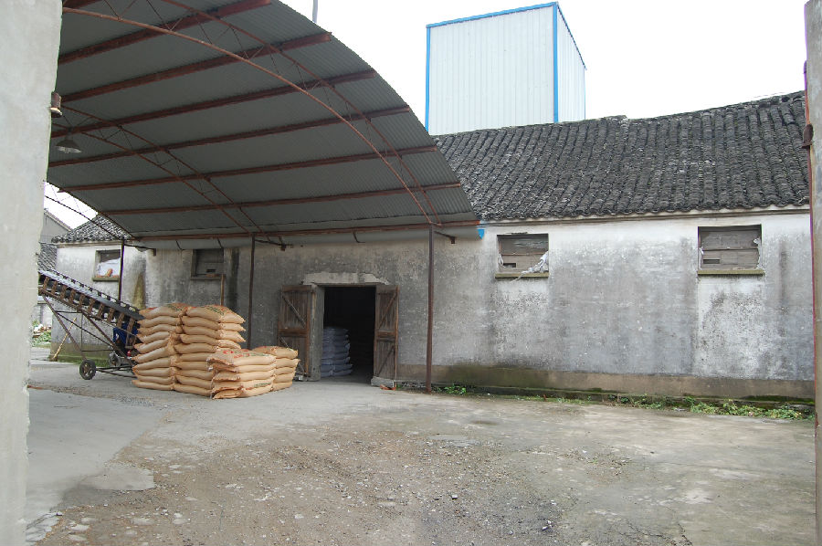

嘉兴市文物保护网 · 市级文物保护点 · 2020-11-02 · 原文

新塍镇财神庙位于嘉兴市新塍镇西北大街240号，据周围居民介绍，建于清道光年间，为供奉财神所用，解放后被改为粮站仓库，2006年转作嘉兴新塍兴龙饲料公司加工车间使用。坐南朝北，占地面积177平方米，通进深9.2米，通面阔19.2米。房屋现存单独一幢，屋顶为硬山顶，山墙用青砖砌筑，砖木结构，抬梁和穿枋式并用，五檩，前后各双步，北侧有冬瓜梁，其余皆用斗承梁架，月梁等处有雕饰（已被石灰掩盖，具体纹饰不可辨）。财神庙作为宗教祭祀建筑，在传统社会中是百姓精神生活的重要组成部分，经过文革同类建筑基本绝灭，此次发现填补了嘉兴乡土庙宇的空白，具有较高的历史价值。2009年公布为嘉兴市文物保护点。